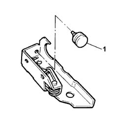

7020D70 end travel stop of (1), lh or rh - replace
- Path
- Procedures > 70 FITTINGS > 7020 LOAD CARRYING COMPARTMENT DOORS > 7020D sliding door closure devices > 7020D70 end travel stop of (1), lh or rh - replace
- Kind
- repair procedure (removal / refitting; the operation number is the code)
- Applies to
- all engines; all production periods
- Interactive page
- https://sloeber94.github.io/elrnDB-fDbl/en/#/2585074
Applies to: all engines; all production periods
 Removing
Removing
 Refitting
RefittingOp. 7020C12 SLIDING SIDE DOOR END OF TRAVEL STOP LEFT OR RIGHT - R.R.
1. Remove the buffer from its seating.

Applies to: all engines; all production periods
Refitting
RemovingUse a new buffer.
Smear Vaseline on the buffer's bayonet fitting.
Fit the buffer in its seating.
Op. 7020C12 SLIDING SIDE DOOR END OF TRAVEL STOP LEFT OR RIGHT - R.R.